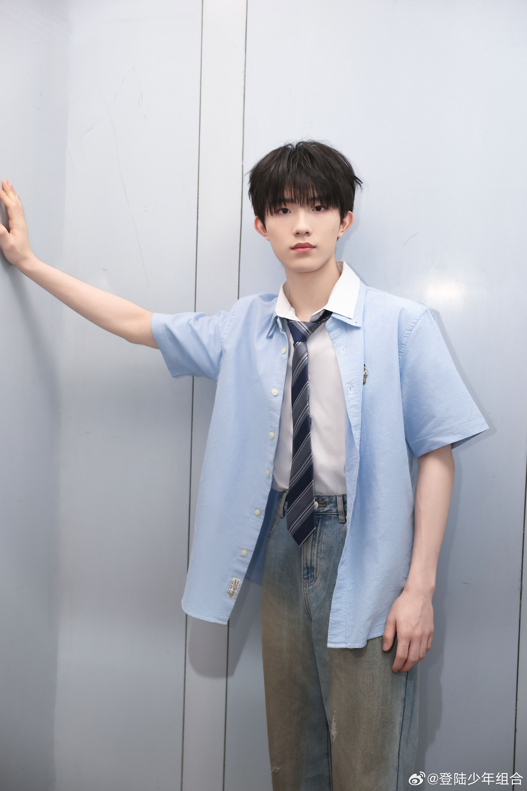

TransfOrmProject (TOP) is a Chinese boy group that debuted on August 29, 2024, following their debut showcase in Kuala Lumpur, from August 25 to August 26, 2024. As a rookie group under Time Fengjun Entertainment, TOP has garnered significant attention for its potential and talent, especially as the first group to debut from the company's third generation of trainees. The group's members bring a unique blend of vocal ability, dance skills, and personality, making them stand out in the Chinese music scene. The name “TransfOrmProject” reflects the idea of transformation and growth, embodying the group's commitment to evolving and showcasing their diverse talents. The members are not only known for their performances but also their individual charm, which has won them a dedicated fanbase.
Follow their official account: TransfOrmProject Official Weibo
| Member | Birthday | Support Color | MBTI |
|---|---|---|---|
| Zhu Zhixin | November 19, 2005 | Yellow | INFP |
| Zhang Zeyu | April 30, 2007 | Green | ESTJ |
| Zhang Ji | February 3, 2007 | Orange | INFP |
| Zuo Hang | May 22, 2006 | Blue | INFP |
| Su Xinhao | January 12, 2007 | Red | ENTJ |
Group Photo:
Members:
